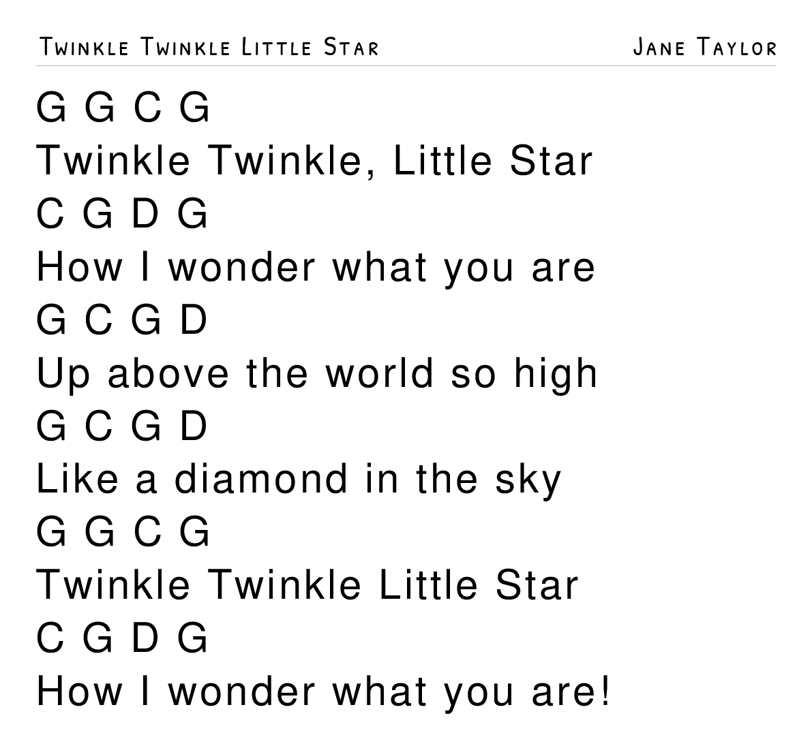

This short lesson will act as an entry point on how to learn a song. We will start will melody, chords, then chord melody.
Additonally, we will explore transposing via capo, an intro to writing your own music and some good resources to learn more music!
This Lesson Covers:
Learning a Song: Melody, Chords, Chord-Melody
Capos: Transposing Keys with the Same Shapes
Technique: Hammer-ons, Pull-offs, Slides.
Approaching Songwriting: Basic Intro to Songwriting
2.1 Learning Songs with Open Chords
We’ll learn a complete song using open chords, melody, and rhythm. Our song is “Twinkle Twinkle Little Star.” Since most students know this tune, you’ll already have a clear idea of how it should sound—this mental reference is crucial for accurate practice.
Step 1: Listen
Play the recording on loop, humming or singing along until you can confidently reproduce the melody.
Step 2: Chord Shapes & Rhythm
A chord chart shows chord changes above lyrics—just like on popular websites like Ultimate Guitar or Songsterr. Learn the open G major chord shapes below:
G – 320033
G - 320000
C – x32010
D – xx0232

Start with one downstroke per beat (the basic pulse). As you get comfortable switching between shapes, add another downstroke (two strums per beat). Practice with a metronome or a backing track.
Step 3: Melody Practice
Use the provided tablature or standard notation to practice the melody. Slow the playback speed to 0.75× and follow along until you can play each note cleanly; then build up to full speed.
Step 4: Combining Chords & Melody
Blend your chord strumming with the melody by focusing on strings that match each melody note and lifting fingers on others. Notice how removing some fingers from the open G chord we learned, can better match the melody.
Key Tip: Always listen for the melody note ringing clearly amid your chord strums. If it’s buried, lift or mute the extra strings.
2.2 Using a Capo to Change Keys
A capo clamps onto your guitar neck and raises all open strings by one fret per position. This lets you use the same chord shapes in a new key without learning new fingerings.
For example, placing the capo at fret 2 turns your G shape into an A chord:
G shape → A chord
C shape → D chord
D shape → E chord
Notice how the chords go up one whole step per 2 frets, everything moves up a half step per fret.
Now play the same "Twinkle Twinkle" progression from 2.1 with the capo on fret 2 and instead of G, you’ll be in the key of A.
2.3 Essential Guitar Techniques
Three simple techniques can add flair to your playing. Watch each embedded tutorial, then practice the tab examples shown.
Hammer-ons and Pull-offs
0h2 = Play open string then hammer-on to fret 2
Slides
2p0 = Fret the 2nd fret then pull-off to open string
Try hammer-on's pull offs and slides using the minor pentatonic scale:

Here we have an example of the A minor pentatonic shape. Notice that it contains 5 notes (penta) that are in A minor
or C major (relative major). These notes will always work within the key and gives a blues-like feeling.
Try to hammer on from any blue highlighted note to the following red note on the same string. Pull off from the red to blue,
and try to slide in both directions.
2.4 Approaching Songwriting
You can write simple songs using open chords in keys like G, C, A, and D. We’ll focus on G major since it uses mostly easy open shapes.
Pick a chord progression: Choose 2–4 chords from the key of G. Ex: G – C – D – Em All chords in G: I (G) – ii (Am) – iii (Bm) – IV (C) – V (D) – vi (Em) – vii° (F# dim)
Start or end on G: Beginning or resolving on G gives your progression a sense of completion.
Play and document: Practice with a metronome and try recording it.
Add a melody: Use notes from any of the three included scales in this lesson or try to combine them.
Even 3–5 note melodies work!
Experiment freely: If it sounds off, try the next note up or down. Keep it fun.
G Major Pentatonic (Root Position):

G Major Scale (Root Position):

E Minor Pentatonic (Relative Minor):

Notice how the G major pentatonic outlines the G major scale, the pentatonic scale just excludse the vii (F#) and
the IV (C). These notes will all sound "right". Use E minor for a darker sound and G major for a lighter sound, combine the two and explore!
2.5 Best Resources for Learning Songs
Combine high-quality tutorials and reliable tabs to expand your repertoire: